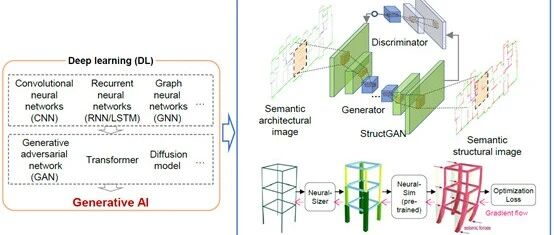

新综述论文：建筑结构的生成式智能设计方法研究进展

论文：Generative AI design for building structures. Automation in Construction, 2024.
链接：https://doi.org/10.1016/j.autcon.2023.105187
作者：廖文杰，陆新征，费一凡，顾燚，黄羽立
0
太长不看版
建筑结构智能设计是智能建造的重要内容，工程师一直致力于探索、开发和应用更加先进的人工智能技术，实现更加高效、便捷、安全的建筑结构设计。
生成式人工智能（AI）是近年来发展和应用最为有效的深度学习技术之一，其强大的学习和生成能力，为解决智能设计相关难题提供了有力的支持。因此，基于生成式AI的建筑结构智能设计技术开始不断发展，具备巨大潜力；同时，相关研究也有待进一步的系统性回顾梳理，为后续研究提供参考。
本研究对近年来120余篇相关文献进行了回顾和整理，从 (1) 智能设计的数据表达和数据集构建；(2) 生成式AI算法开发；(3) 评价方法和损失函数构建；(4) AI生成联合智能优化等方面进行了分析和讨论；并介绍了相关应用和案例的研究进展，最后分析和总结了其关键科学问题，对未来研究内容进行了展望。
1
建筑结构智能设计算法的发展和应用现状
建筑结构的智能设计是近年来新出现的技术吗？答案当然是否定的。
对于建筑智能化设计而言，在1970s左右，已有研究提出了基于专家系统的建筑智能设计方法，但计算机计算能力与算法的不足限制了相关方法的进一步发展。
1990年代之后，随着专家系统、进化算法、拓扑优化以及元胞自动机等智能化算法的快速发展，大量的智能化设计研究开始出现。但是，由于大部分的智能化算法对于计算机计算能力的要求较高，当时的计算机无法满足需求，故而在2005年之后，智能化建筑设计研究的浪潮逐渐消退。
2012年之后，随着计算机计算能力的飞速发展，以及深度学习算法的快速进步，建筑的智能化设计研究重新开始活跃。可以看到，建筑的智能化设计发展与计算机硬件发展以及智能算法的进步密切相关，建筑结构作为建筑设计的重要内容，其智能化设计的发展趋势也基本一致。
图1显示了AI-based建筑结构设计的研究论文数量变化，可以看到智能设计研究逐年增加，2020年以来增加更加显著。

图1 AI-based建筑结构设计的研究论文数量的变化
本研究以2012年为节点进行划分，2012年前为Classical AI methods，2012年后为Modern AI methods，本综述将主要介绍2012年后的深度学习算法。如图2所示，可以看到2020年之后，Modern AI methods占比显著提高，已达到48%，并将逐步超越Classical AI methods。

图2 Modern AI methods占比显著提高
2
主要研究进展简介
2.1 数据特征表达与数据集构造
相关研究中对于结构设计数据主要采用张量或者图谱的表达方式，典型数据表征如图3所示（图源详见原文文献说明）。此外，由于结构设计领域公开数据有限，所以广泛应用数据增广方法来解决数据量问题。

图3 智能设计的典型数据表征
（图源详见原文文献说明）
2.2 生成式AI智能设计方法
通过文献调研，针对住宅结构，基于卷积网络的生成对抗网络以及图神经网络是主要的生成式AI技术；针对空间结构，主要采用变分自编码（VAE）算法进行智能设计；还有针对梁构件拓扑构型设计，主要采用ANN、CNN等方法为主。典型算法如图4所示（图源详见原文文献说明）。

图4 生成式AI智能设计方法分类
（图源详见原文文献说明）
2.3 智能设计评价方法
相关的评价则主要分为生成式AI训练阶段评价和测试阶段评价，训练阶段评价方法即为损失函数构造方法，测试阶段评价则是对设计结果可行性进行度量。二者有较为显著的差异，训练阶段的评价需要保证损失函数可微，且可嵌入神经网络的计算图中，这样才可以有效指导生成式AI的学习和优化；而测试阶段的评价则没有前述限制。
2.4 生成+优化联合设计
生成式AI与遗传算法等优化算法结合的设计方法，以生成式AI的设计结果作为种子解，其优势可以通过图5来示意性的说明。

图5 生成式算法可以和优化算法相结合
另一种方法则是结合生成与优化一体的深度强化学习方法（图6），其特点则是结合生成、评估、优化、学习于一体，但其设计效率仍旧有待提升。

图6 结合生成与优化一体的深度强化学习方法
（图源详见原文文献说明）
3
现状分析与展望
3.1 建筑结构智能设计技术分级
目前，在建筑结构智能设计领域的研究中，尚未有较为明确的技术发展分级定义。因此，我们参考自动驾驶领域的技术分级，基于人工智能在建筑结构设计中发挥作用的程度高低，建议可将其划分为L0~L5的层级，供大家参考。
3.2 建筑结构智能设计的关键科学问题
通过对既有研究的回顾，可以看到虽然生成式AI已经取得了系列进展，但是仍旧面临很多关键挑战，包括但不限于：
(1) 数据少（高质量图纸难获取），小样本下，如何识别关键特征并发掘潜在规律；
(2) 特征稀（图纸上与结构设计相关的有效信息比例少），如何准确识别、提取和学习稀疏关键特征；
(3) 约束多（空间布置、力学原理、规则经验等约束），如何构造可以反映不同约束且梯度连续的神经网络；
(4) 表征难（图纸、规范、经验等多模态数据表征），如何实现多源异构数据的信息提取与多维非结构化知识表征；
(5) 指标严（AI设计经济指标不好就没法用），如何融合智能生成算法与多目标、多尺度优化算法；
(6) 容错低（结构设计不容出错），如何建立主观感受与客观指标融合的人机耦合评价策略。
3.3 建筑结构智能设计的展望
我们对后续研究进行了初步的展望，包括但不限于：
（1）研究技术展望：数据特征表达与数据集构建方面，多模态数据特征的综合表达和融合学习有待研究；生成AI算法方面方面，Diffusion model、LLM强大的性能有望实现机器智能对建筑结构设计知识的深入理解；设计评价及优化方面，通用、可微的知识损失函数构造方法有待更多的研究。
（2）应用推广展望：建筑结构设计全过程智能化，需要更好的软件基础+算法基础+应用基础。
联络邮箱:
ai-structure.com联系方式
QQ群，AI-structure-交流群：741840451
AIstructure-Copilot实现“三驾马车”驱动：Diffusion Model智能设计上线！(20231103)
AIstructure-Copilot-v0.1.2更新：精细化考虑抗震设计条件影响的全新GNN版本，请您来试试(20230928)
ai-structure.com：剪力墙结构材料用量AI预测模块上线测试(20230731)
AIstructure-Copilot：嵌入CAD平台的结构智能设计助手(20230711)
建筑结构生成式智能设计在日内瓦国际发明展上获“评审团特别嘉许金奖”(20230519)
ai-structure.com：土木工程自然语言规则AI解译模块上线测试(20230513)
AI剪力墙设计问卷调查结果(20230508)
相关论文
Liao WJ, Lu XZ, Huang YL, Zheng Z, Lin YQ, Automated structural design of shear wall residential buildings using generative adversarial networks, Automation in Construction, 2021, 132, 103931. DOI: 10.1016/j.autcon.2021.103931.
Lu XZ, Liao WJ, Zhang Y, Huang YL, Intelligent structural design of shear wall residence using physics-enhanced generative adversarial networks, Earthquake Engineering & Structural Dynamics, 2022, 51(7): 1657-1676. DOI: 10.1002/eqe.3632.
Zhao PJ, Liao WJ, Xue HJ, Lu XZ, Intelligent design method for beam and slab of shear wall structure based on deep learning, Journal of Building Engineering, 2022, 57: 104838. DOI: 10.1016/j.jobe.2022.104838.
Liao WJ, Huang YL, Zheng Z, Lu XZ, Intelligent generative structural design method for shear-wall building based on “fused-text-image-to-image” generative adversarial networks, Expert Systems with Applications, 2022, 118530, DOI: 10.1016/j.eswa.2022.118530.
Fei YF, Liao WJ, Zhang S, Yin PF, Han B, Zhao PJ, Chen XY, Lu XZ, Integrated schematic design method for shear wall structures: a practical application of generative adversarial networks, Buildings, 2022, 12(9): 1295. DOI: 10.3390/buildings1209129.
Fei YF, Liao WJ, Huang YL, Lu XZ, Knowledge-enhanced generative adversarial networks for schematic design of framed tube structures, Automation in Construction, 2022, 144: 104619. DOI: 10.1016/j.autcon.2022.104619.
Zhao PJ, Liao WJ, Huang YL, Lu XZ, Intelligent design of shear wall layout based on attention-enhanced generative adversarial network, Engineering Structures, 2023, 274, 115170. DOI: 10.1016/j.engstruct.2022.115170.
Zhao PJ, Liao WJ, Huang YL, Lu XZ, Intelligent beam layout design for frame structure based on graph neural networks, Journal of Building Engineering, 2023, 63, Part A: 105499. DOI: 10.1016/j.jobe.2022.105499.
Zhao PJ, Liao WJ, Huang YL, Lu XZ, Intelligent design of shear wall layout based on graph neural networks, Advanced Engineering Informatics, 2023, 55, 101886, DOI: 10.1016/j.aei.2023.101886
Liao WJ, Wang XY, Fei YF, Huang YL, Xie LL, Lu XZ*, Base-isolation design of shear wall structures using physics-rule-co-guided self-supervised generative adversarial networks, Earthquake Engineering & Structural Dynamics, 2023, DOI:10.1002/eqe.3862.
Feng YT, Fei YF, Lin YQ, Liao WJ, Lu XZ, Intelligent generative design for shear wall cross-sectional size using rule-Embedded generative adversarial network, Journal of Structural Engineering-ASCE, 2023, 149(11). 04023161. DOI:10.1061/JSENDH.STENG-12206.
Fei YF, Liao WJ, Lu XZ*, Guan H*, Knowledge-enhanced graph neural networks for construction material quantity estimation of reinforced concrete buildings, Computer-Aided Civil and Infrastructure Engineering, 2023, DOI: 10.1111/mice.13094.
Zhao PJ, Fei YF, Huang YL, Feng YT, Liao WJ, Lu XZ*, Design-condition-informed shear wall layout design based on graph neural networks, Advanced Engineering Informatics, 2023, 58: 102190. DOI: 10.1016/j.aei.2023.102190.
Fei YF, Liao WJ, Lu XZ*, Taciroglu E, Guan H, Semi-supervised learning method incorporating structural optimization for shear-wall structure design using small and long-tailed datasets, Journal of Building Engineering, 2023, DOI：10.1016/j.jobe.2023.107873
Liao WJ, Lu XZ*, Fei YF, Gu Y, Huang YL, Generative AI design for building structures, Automation in Construction, 2024, 157: 105187. DOI: 10.1016/j.autcon.2023.105187

学术报告视频
公众号文章
---End--